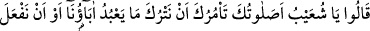
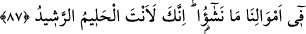

bulunanların kalplerine Allah mutlaka korku ilka eder. Zinânın alenen yapıldığı bir
yerde mutlaka ölümler çoğalır. Ölçü ve tartının eksik yapıldığı yerde yaşayanların
rızkını Allah mutlaka keser. Adâletsiz hüküm verilen bir toplumda mutlaka kan akıtma
hâdiseleri yaygınlaşır. Anlaşmaya bağlı kalmayan bir topluluğa da Allah mutlaka
düşmanı musallat eder.”[161]
et-Te’vîlâtü’n-Necmiyye’de şöyle denilir: “Ölçüyü ve tartıyı eksik yapmayın.” Yani
muhabbet ölçüsü ile taleb tartısını eksik yapmayın. Çünkü muhabbetin bir ölçüsü vardır
ki o, mâsivâya düşman olmaktır. Nitekim Halil İbrahim (a.s.) dostluğunu ızhar ederken:
“Âlemlerin Rabbi müstesna, onlar benim düşmanımdır.” (eş-Şuarâ, 26/77) demiştir.
Allah Teâlâ ile birlikte bir kimseyi veya bir şeyi sevdiğin zaman, Allah’ı sevme
ölçüsünde eksiklik yapmış olursun. Ayrıca talebin de bir tartısı vardır ki o, şeriat ve
tarikat ayakları üzerinde yürümektir. Nitekim şöyle denilmiştir: “İki adımla vâsıl
olursun” Bu iki adım olmadan hareket edersen tartıyı eksiltmiş olursun.”
Şu halde müride düşen, velî ve nebîlerin terbiyesiyle terbiyelenip ayağını birinci yola
koyarken kendisine emredilip şart koşulduğu üzere koymasıdır. Güvenilir ve dosdoğru
olması, adâletle sağlam bir denge üzerinde dosdoğru bir kıstasla tartarak, sağlam bir
ölçüyle ölçerek bütün hak sahiplerine haklarını vermesi gerekir. İşte o zaman Mevlâ,
dünyada hüsn-i kabûlü ve mehdi, âhirette ise sevabı ve nimetlere ermeyi lütfeder. O da
mutlu yaşar; mutlu ölür. Ama haksızlık eder, zâlim ve hâin olur, büyüklük taslar ve
kötülüklerde ısrar eder, Allah’ın fazlı ve affı da imdadına yetişmezse Allah ona
dünyada reddedilme ve kötülenme ile, âhirette ise azab ve intikam almak sûretiyle
adâletiyle muâmele eder. Böylece şakî olarak yaşar; şakî olarak ölür ve şakî olarak
dirilir.
Mesnevî’de şöyle denilir:
Terazin eğriydi, azgındı,
Mükâfât terâzisinin doğru olmasını neden beklersin?
Hıyânette, eksik tartmada âdetâ sol ayak kesilmiştin,
Nasıl olur da terâzin sağ yanından gelir?
A boyu bükülmüş, mükâfât ve cezâ gölge gibidir,
Elbette gölgen de önüne iki büklüm düşecek.
87. Dediler ki: “Ey Şuayb, babalarımızın taptığı şeylerden yahut mallarımız
hususunda dilediğimizi yapmayı terk etmemizi sana namazın mı emrediyor? Oysa